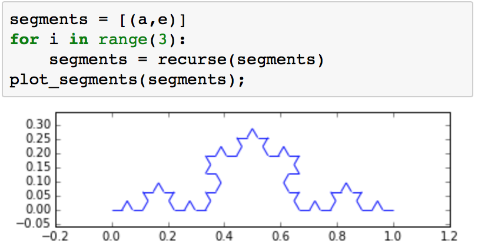
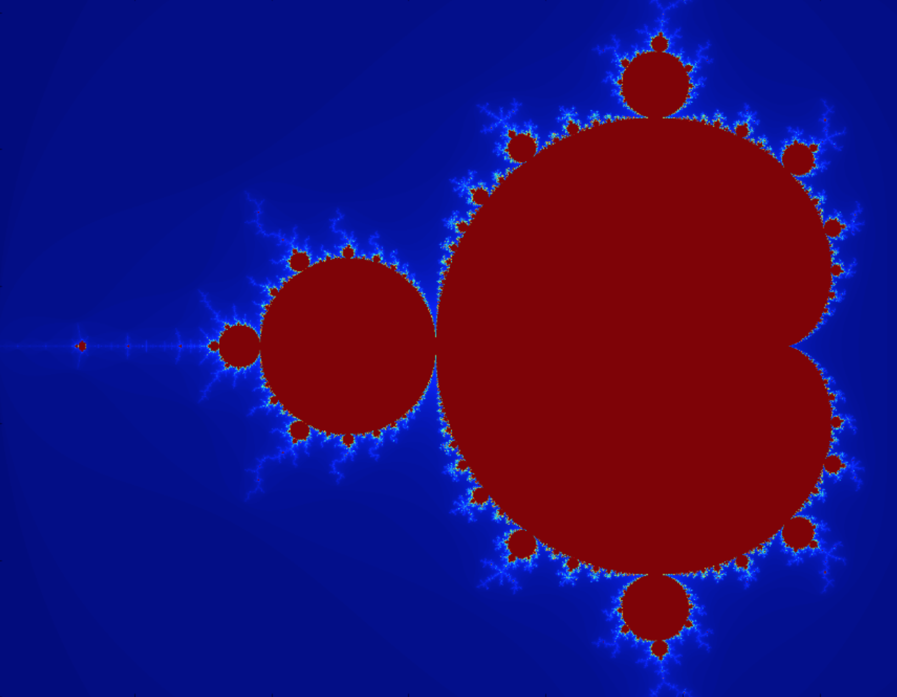
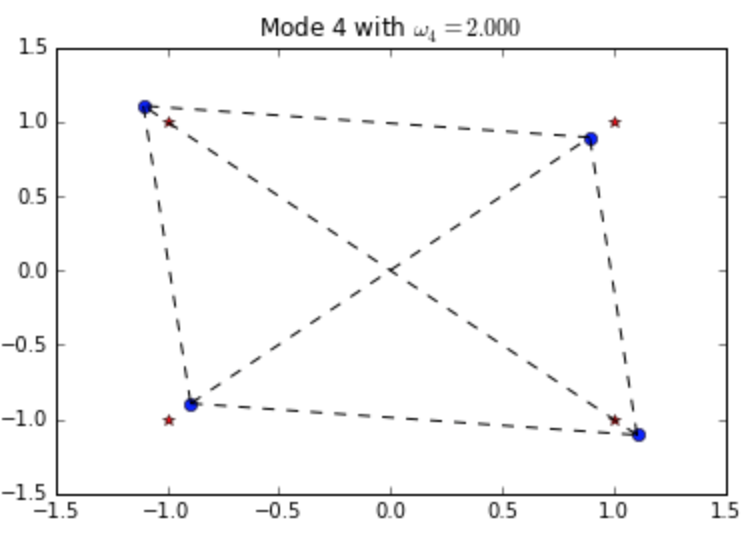
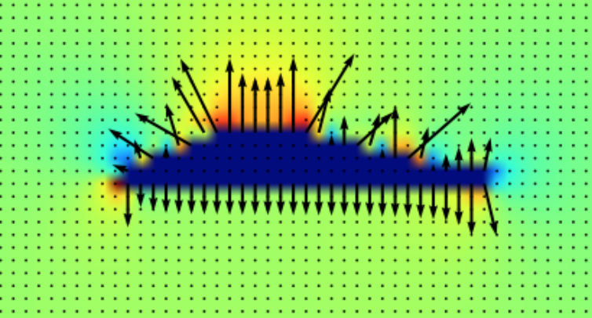

High Performance Computing Bootcamp
exploring mathematics, computer programming, and engineering
July 6th - 10th • 2015 • Bel Air • Maryland
Overview
The 2015 Stone Ridge Technology Boot Camp was held the week of July 6th - 10th. Eight local high school students participated. We plan to offer this camp again in summer 2016.
Highlights of 2015 Camp
Day 1: Introdution to python and the Mandlebrot Set
Students explored IPython notebooks for symbolic math, graphics, and generated fractals.
 (srt_bootcamp/KochSnowflake.ipynb)
Day 2: Introduction to GPU computing
Students learned to write simple CUDA kernels and calculated the Mandelbrot set on GPUs.
< (srt_bootcamp/MandelbrotGPU.ipynb)
Day 3: Matricies and Vibrational Normal Modes
Students learned the physics of simple harmonic motion, matrix eigenvalues, and explored normal modes of ball-and-spring models.
 (srt_bootcamp/BallSpring.ipynb)
Day 4: Introduction to Waves in 1D and 2D
Students learned about the wave equations and studied waves on a string, listened to the sounds of different wave shapes, and created two-dimensional wave packets.
 (srt_bootcamp/WavesIn2D.ipynb)
(srt_bootcamp/WavesIn2D.ipynb)
Day 5: Introducion to Fluid Flow: Lift on a Wing
Students learned basics of fluid flow and explored the lift forces on simple wing shapes.
 (srt_bootcamp/FluidFlowWing.ipynb)
Resources
All materials ©2015 Stone Ridge Technology and are distibuted freely on GitHub through an MIT licence: shumway/hpc_bootcamp